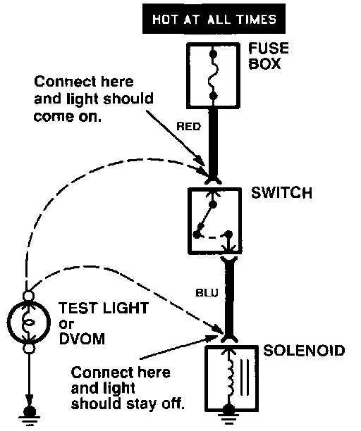

Testing For Voltage
Testing For Voltage:

When testing for voltage at a connector without wire seals, you do not have to separate the two halves of the connector. Instead, probe the connector from the back. Always check both sides of the connector because dirty, corroded, and bent terminals can cause problems (no electrical contact = an open).
1. Connect one lead of the test light to a known good ground, or, if you're using a Digital Volt Ohmmeter (DVOM), place it in the appropriate DC volts range, and connect its negative lead to ground.
2. Connect the other lead of the test light or DVOM to the point you want to check.
3. If the test light glows, there is voltage present. If you're using a DVOM, note the voltage reading. It should be within one volt of measured battery voltage.
A loss of more than one volt indicates a problem.
NOTE: Always use a DVOM on high impedance circuits. A test light may not glow (even with battery voltage present).